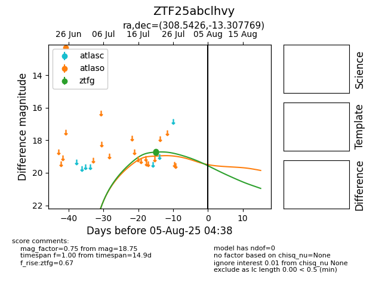

Target ZTF25abclhvy at 2025-08-05 04:38, see:
FINK: fink-portal.org/ZTF25abclhvy
Lasair: lasair-ztf.lsst.ac.uk/objects/ZTF25abclhvy
ALeRCE: alerce.online/object/ZTF25abclhvy
alt names
ZTF25abclhvy (ztf,fink)
coordinates:
equatorial (ra, dec) = (308.5426,-13.30777)
galactic (l, b) = (32.1124,-28.70607)
photometry
last atlaso=12.32, ztfg=18.75
1 atlaso, 4 ztfg detections
